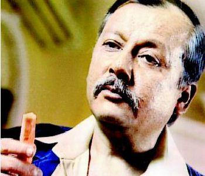
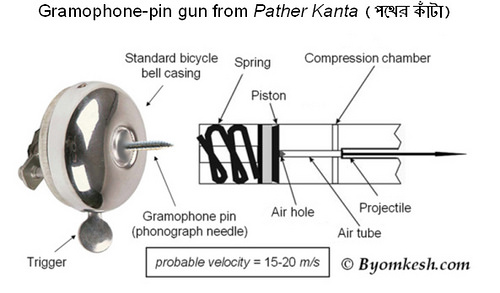
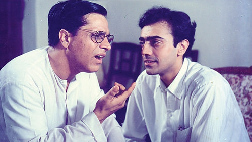
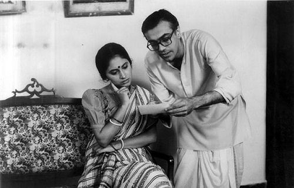

Karamchand and Byomkesh Bakshi Were the Best Detectives
Jab mein chhota bachcha tha (When I was a kid), Karamchand used to be my favourite serial. I am 77 born, so I was about 10-12 years old at that time. Oh, what fun it was watching Karamchand and his secretary, Kitty.
Every detective serial has a typical approach. The potential culprits always turn out to be innocent in the end. It was like C.I.D. (TV Series) of today. Karamchand had just a two-member team. Oh, how can I forget Gajar (Carrot). It was like part of the group. Karamchand always used to keep one in his pocket. "Gajar Khaoge", he always offered one to Kitty, and she always shyly smiled. I do not remember her taking a Gajar bite.

Pankaj Kapoor was wonderful in Karamchand's appearance. Sushmita Mukherjee was great too. I do not remember any other character from the show.
After 5-6 years of Karamchand, another great series caught people's attention – Byomkesh Bakshi. It was awesome. It had science fiction too. Just imagine, some of the stories were written in the 1930s. Sharadindu Bandyopadhyay, the great author, could think of so many innovative story ideas back then.
I was in my 9th or 10th standard at that time. The time when we read a lot of physics, chemistry, etc., especially in India, to get into engineering colleges. Maybe that is the reason I liked the sci-fi part of it. I remember, in one of the episodes, the weapon used was a gramophone pin fitted in a bicycle bell. The bell worked like a mini gun, and it was used to kill people. Just imagine. It was fascinating for me at that age. Here is the schematic diagram of the gun; found it on the internet.

Byomkesh Bakshi was very different from other detective stories. He was not like a hero, but was like a normal middle-class person. He had friends, a family.


He discussed cases with his friend Ajit and with his wife Satyavati. It was all so different. Rajit Kapoor – what a coincidence, another Kapoor detective – played so brilliantly in Byomkesh's role. K. K. Raina and Sukanya Kulkarni were too good as Ajit and Satyavati respectively. Sharadindu Da, salute to you.
Honestly, most other detective serials are just timepass when compared to Karamchand and Byomkesh Bakshi. We have so many fond memories of watching TV. I wish our kids also get something to cherish in their 40s.